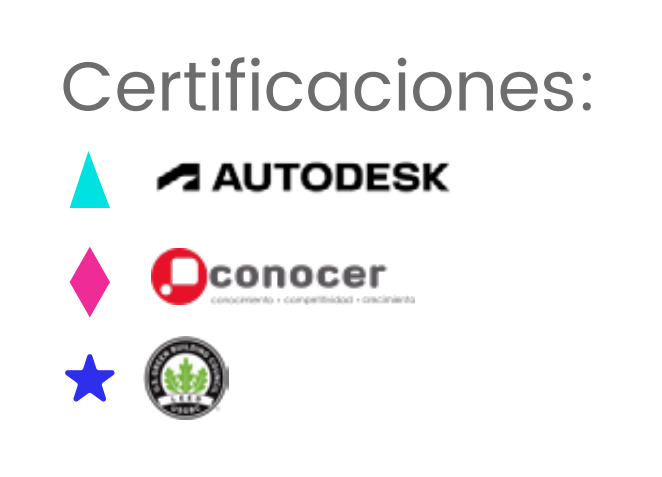

🪑 Licenciatura Ejecutiva en Diseño de Interiores
Aplica EQ | Categoría: Diseño, Arte y Arquitectura
📖 ¿De qué trata esta Licenciatura?
Forma profesionales creativos capaces de transformar espacios interiores en ambientes funcionales, estéticos y saludables, aplicando conocimientos técnicos, tendencias actuales y herramientas digitales para la gestión integral de proyectos de interiorismo.
📌 Detalles del Programa
- ⏳ Duración: 3 años (9 cuatrimestres).
- 🛡️ Modalidad: 100% en línea.
- Plataforma: Blackboard con acceso 24/7.
- Clases: 1 a 2 sesiones semanales opcionales (grabadas).
- Soporte: Asistencia Lince 24/7.
- Recursos: Biblioteca virtual, Office y software de diseño.
🌟 Razones para Estudiar en UVM
- Certificaciones laborales: 5 asignaturas certificadas con contenido avalado por Coursera y universidades líderes.
- Doble Titulación: Título nacional + opción internacional con National Louis University.
- Internacionalización: Cursos, viajes académicos y conferencias con expertos internacionales.
- Alta empleabilidad: Hasta 80% de mejora laboral según encuestas de egresados.
💼 Oportunidades Laborales
Al egresar, podrás desempeñarte en:
- 📌 Empresas de interiorismo y arquitectura: Diseño y adecuación de espacios para vivienda, comercio u oficinas.
- 📌 Espacios efímeros: Creación de stands, escenografías, exposiciones o eventos.
- 📌 Paisajismo y espacios culturales: Diseño de zonas verdes, galerías o entornos recreativos.
- 📌 Estudio propio: Consultoría o emprendimiento especializado en interiorismo, ambientación y mobiliario.
🎓 Certificaciones Internacionales
🎯 Tips para Vender la Licenciatura
- 💡 "Ideal para personas creativas con interés en transformar espacios y mejorar la calidad de vida de los usuarios."
- 🔍 "Aprenderás desde teoría del color, mobiliario, tendencias y sustentabilidad, hasta modelado digital y supervisión de obra."
- 📌 "Puedes trabajar por tu cuenta, en empresas o estudios de diseño, arquitectura, retail o eventos."
🛑 Objeciones Comunes y Respuestas
- ❓ "¿Puedo aprender diseño de interiores en línea?"
✅ "Sí, con herramientas digitales, asesoría docente y proyectos prácticos, aprenderás a diseñar profesionalmente desde casa." - ❓ "¿Tiene campo laboral?"
✅ "Sí. El diseño de interiores es clave en empresas, comercios, oficinas y proyectos residenciales." - ❓ "¿Necesito saber dibujo o arquitectura?"
✅ "No. Aprenderás desde los fundamentos, incluyendo representación gráfica y software especializado."